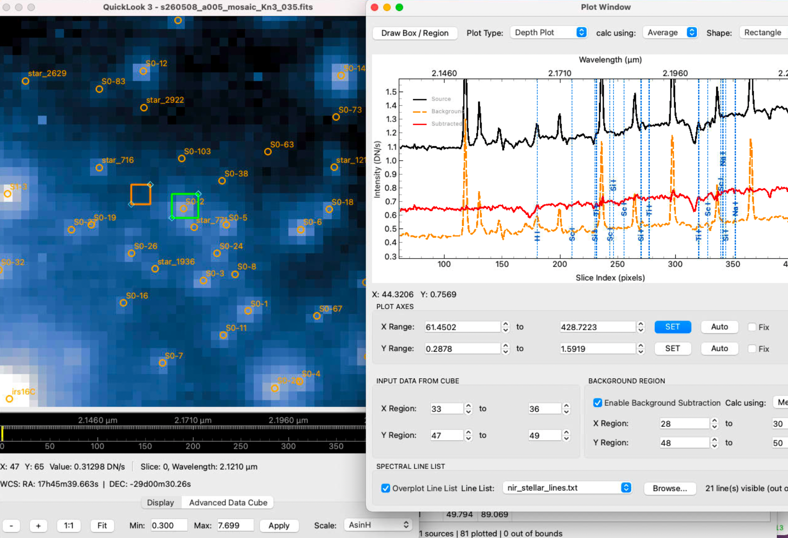
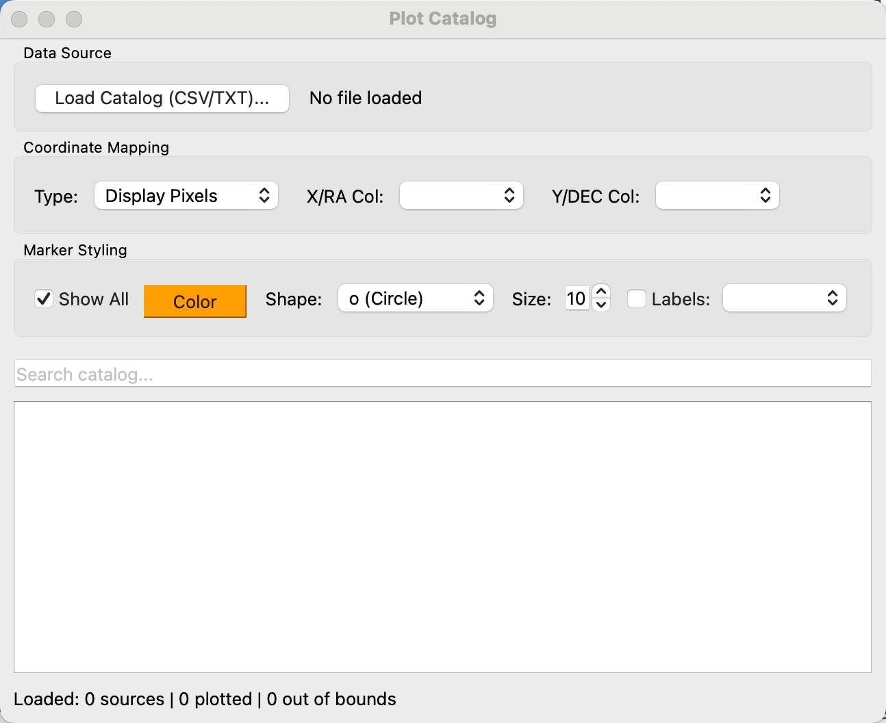

Astronomical Tools & Algorithms Guide
QuickLook 3 provides a suite of analytical tools tailored for Integral Field Unit (IFU) data cubes and 2D astronomical images. This guide details the usage and mathematical algorithms underlying each tool.
1. Depth Plot & Spectral Line Lists
The Depth Plot tool extracts 1D spectra along the wavelength (\(Z\)) axis of a 3D data cube.

Algorithms
A. Spatial Region Spectrum Extraction
For a user-selected Region of Interest (ROI) containing spatial pixels \((x, y)\), the spectrum value \(S(z)\) at wavelength channel \(z\) is computed using one of three calculation methods:
- Mean (Average): $\(S(z) = \frac{1}{N} \sum_{(x,y) \in \text{ROI}} I(x, y, z)\)$
- Median: $\(S(z) = \text{median}_{(x,y) \in \text{ROI}} \left( I(x, y, z) \right)\)$
- Total (Sum): $\(S(z) = \sum_{(x,y) \in \text{ROI}} I(x, y, z)\)$
B. Background Subtraction
When Enable Background Subtraction is checked, a secondary background ROI is defined. The background spectrum \(S_{\text{bg}}(z)\) is calculated using the selected background method (Median, Mean, or Total), and the background-subtracted spectrum is computed as:
C. Wavelength Primary X-Axis & Dual Axis Display
When FITS WCS wavelength information is available, the primary bottom X-axis displays physical wavelengths \(\lambda\) (\(\mu\text{m}\)). The top X-axis (PixelIndexAxis) dynamically renders the corresponding 0-indexed channel slice numbers (\(z \in [0, N-1]\)).
This setup allows users to click the Export... button on the top control bar (or right-click the plot and select Export...) to save wavelength-resolved spectra (\(xData = \lambda\), \(yData = \text{Intensity}\)) to CSV, vector graphics, or images.
Line list wavelengths \(\lambda\) are mapped directly onto the plot in wavelength units. Overlays positioned outside the dataset's visible spectral range are automatically filtered out.
D. Spectral Line Overlay & Staggering
- Overlaid spectral line labels feature 90° vertical rotation.
- To prevent overlapping labels when spectral lines are closely spaced, label heights are automatically staggered across 4 discrete vertical offset levels.
- LaTeX mathematical expressions enclosed in
$$...$$(e.g.$$H_\alpha$$,$$P_{2f}6.5$$) are automatically parsed and formatted.
E. Exporting Spectra & Figures (CSV, PNG, SVG)
Astronomers can export the extracted 1D spectra and plot graphics by clicking the Export... button on the top control bar (or right-clicking anywhere on the plot canvas and selecting Export...):
- Exporting Wavelength & Intensity Data to CSV:
- In the Export dialog, select CSV Exporter under Item to export.
- Select the target curve (
PlotItem,Source,Background, orSubtracted). -
Click Export to save a
.csvdata table. When WCS is present, the first column contains physical wavelengths (\(\mu\text{m}\)) and subsequent columns contain corresponding flux/intensity values (\(DN\) or \(DN/s\)). -
Exporting High-Resolution Images (PNG, JPG):
- Select Image Exporter in the Export dialog.
- Specify output image pixel dimensions (\(W \times H\)).
-
Click Export to save publication-quality plot figures.
-
Exporting Vector Graphics (SVG):
- Select SVG Exporter for vector graphics suitable for publication figures and vector editing software (e.g., Inkscape, Illustrator).
2. Spatial Profile Cuts
The Cut Plot tool extracts 1D spatial intensity profiles across slices of the image plane.
Cut Types
- Horizontal Cut: A slice across a fixed \(Y\) pixel coordinate range.
- Vertical Cut: A slice across a fixed \(X\) pixel coordinate range.
- Diagonal Cut: An arbitrary linear cut defined by two endpoints \((x_0, y_0)\) and \((x_1, y_1)\).
Algorithm
For multi-pixel cut widths, intensity values perpendicular to the cut vector are averaged or collapsed using Median, Mean, or Total sum.
3. 2D Peak & Line Fitting
The Peak Fit tool fits analytical 2D spatial surface models to stars, emission lines, or compact sources within a selected ROI.
Mathematical Models
A. 2D Elliptical Gaussian
where: $\(a = \frac{\cos^2\theta}{2\sigma_x^2} + \frac{\sin^2\theta}{2\sigma_y^2}\)$
The Full-Width at Half-Maximum (FWHM) along major and minor axes is given by: $\(\text{FWHM}_x = 2 \sqrt{2 \ln 2} \cdot \sigma_x \approx 2.35482 \cdot \sigma_x\)$ $\(\text{FWHM}_y = 2 \sqrt{2 \ln 2} \cdot \sigma_y \approx 2.35482 \cdot \sigma_y\)$
B. 2D Lorentzian
C. 2D Moffat Profile
Optimization
Fits are computed using non-linear Levenberg-Marquardt least-squares optimization (scipy.optimize.curve_fit).
4. Aperture Photometry
The Aperture Photometry tool computes integrated stellar fluxes and background sky noise.
Algorithm
- Aperture Flux (\(F_{\text{raw}}\)): Sum of pixel intensities inside a circular aperture of radius \(r_{\text{ap}}\).
- Sky Background (\(I_{\text{sky}}\)): Median pixel intensity computed inside an annular sky region between inner radius \(r_{\text{in}}\) and outer radius \(r_{\text{out}}\).
- Net Subtracted Flux (\(F_{\text{net}}\)): $\(F_{\text{net}} = F_{\text{raw}} - \pi r_{\text{ap}}^2 \times I_{\text{sky}}\)$
5. Strehl Ratio & Optical PSF Analysis
The Strehl Ratio tool evaluates Adaptive Optics (AO) performance by comparing the observed stellar Point Spread Function (PSF) against an ideal, diffraction-limited Airy pattern for a telescope of diameter \(D\) at wavelength \(\lambda\).
Mathematical Model
The theoretical diffraction-limited Airy intensity pattern \(I(\theta)\) is:
where \(J_1(x)\) is the Bessel function of the first kind of order 1.
Strehl Ratio Definition
6. Datacube Arithmetic
The Datacube Arithmetic tool performs element-wise scalar or cube-to-cube mathematical operations (\(+\), \(-\), \(\times\), \(\div\)) between open datasets:
7. Catalog Plotting & World Coordinate Overlay
The Plot Catalog tool overlays external astronomical source catalogs directly onto the 2D image plane or collapsed datacube slices. Both text tables (CSV, TXT, DAT, ECSV, IPAC, ...) and FITS tables (.fits, .fit, .fts, and gzipped variants) are read.

Input Formats
Text catalogs are parsed by astropy.io.ascii in guess mode, so most delimited or
fixed-width layouts load without configuration.
For a FITS table, any binary (BINTABLE) or ASCII (TABLE) extension can be used:
- When the file holds more than one table extension, the tool asks which one to read; a file with a single table loads without prompting. Tile-compressed image extensions are not offered, even though FITS stores them as binary tables.
- Columns holding one value per row per element — a spectrum column, for instance — are omitted, since a catalog overlay needs one scalar per source. The extension label next to the filename reports how many were skipped.
- Undefined (
TNULL) and masked coordinates are counted as unusable in the status line rather than being plotted at the origin. - Coordinate columns are guessed from the usual
photutilsand SExtractor spellings (xcentroid/ycentroid,X_IMAGE/Y_IMAGE,ALPHA_J2000/DELTA_J2000,RAJ2000, ...) in addition to plainX/YandRA/DEC, and can always be overridden with the column selectors.
On the command line, --catalog <file> loads a catalog at startup and --catalog-hdu
<index|EXTNAME> selects the FITS extension non-interactively.
Features & Coordinate Modes
Astronomers can select between three coordinate modes:
- World Coordinates (RA / DEC): Celestial Right Ascension (\(\text{RA}\)) and Declination (\(\text{DEC}\)) in degrees or sexagesimal notation.
- FITS Array Pixels: 0-indexed or 1-indexed raw FITS array pixel coordinates \((x_{\text{fits}}, y_{\text{fits}})\).
- Display Pixels: Direct display viewport pixel coordinates.
Algorithms
A. WCS Celestial-to-Pixel Transformation
For catalogs specified in celestial World Coordinates \((\text{RA}, \text{DEC})\), celestial coordinates are converted to raw FITS pixel coordinates \((x_{\text{fits}}, y_{\text{fits}})\) using the dataset's 2D/3D FITS World Coordinate System:
B. Display Rotation & Flip Mapping
To ensure source overlays track the image viewport when the astronomer rotates or flips the view, original FITS coordinates \((x_0, y_0)\) are mapped to current display coordinates \((x_{\text{disp}}, y_{\text{disp}})\) via the transformation algorithm:
-
Horizontal Flip Adjustment: If horizontal flipping is enabled: $\(x_1 = N_x - 1 - x_0, \quad y_1 = y_0\)$
-
90° Rotation Iterations: For \(k = \frac{\theta}{90^\circ}\) orthogonal rotations: $\((x_{i+1}, y_{i+1}) = (N_{y,i} - 1 - y_i, \; x_i)\)$
C. Interactive Highlighting & Filtering
- Interactive Source Selection: Clicking any row in the catalog table highlights the target object on the image display with a target reticle ring, and recentres the view on it.
- Clearing a selection: press Escape in the table, use the Clear Selection button beside the search box, or pick Clear Selection from the row's right-click menu. The view stays where it is. (Qt's own way out of a single-selection table is ctrl-clicking the selected row, which few people find.)
- Search & Filter: Real-time text search filters the catalog table and dynamically updates plotted markers.
- Custom Marker Styling: Supports customizable marker shapes (Circles, Squares, Triangles, Diamonds, Crosses), sizes, colors, and text labels.
8. FITS Header Editor
The Header Editor allows astronomers to view, search, add, or modify FITS header cards across all HDU extensions in memory. Changes can be saved back to a new FITS file.
9. Regions
Regions are annotations drawn over the image — circles, boxes, arrows and text — in the manner
of ds9. They can be saved and reloaded, exchanged with ds9 as .reg files, and handed to the
Catalog tool.
Everything lives under the Region menu; the same tools are available from a small vertical toolbar (Region ➔ Region Toolbar, off by default and remembered once chosen) and from the image's own right-click menu.
Drawing
| Shape | How |
|---|---|
| Circle | drag out from the centre |
| Box | drag between opposite corners |
| Arrow | drag from tail to head |
| Text | click where the label goes; the label is asked for afterwards |
Right-clicking the image offers New Region ➔ Circle / Box / Arrow / Text, which places a default-sized region on the pixel under the cursor without any dragging — usually quicker, since the size is easy to change afterwards.
A region is moved by dragging it and resized from its handles. A text region has no separate marker: the text itself is the handle, so click, drag or right-click the words.
Editing
Double-click a region — or choose Properties… from its right-click menu, or from the Region List — to open an editor for everything it carries: position and size, angle, label, colour, line width, dashing, text size, tag, visibility, and a channel range.
A channel range restricts a region to part of a cube, so a marker on an emission-line feature
appears only across the channels where the feature is. This has no equivalent in ds9 and is dropped
when exporting a .reg file, which the export report says.
Region ➔ Region List… shows every region in a table — type, position, size, angle, label, colour and visibility — editable in place. Double-click the Colour cell for a colour picker, or the Type cell for the full properties dialog. Right-click a row for Properties…, Zoom To, Colour…, Copy Coordinates and Delete — Zoom To is the way to find one region in a crowded field.
Colours
Regions default to ds9's green. Note that this is the neon #00ff00 ds9 draws, not the dark
#008000 that Qt and the SVG palette call "green": colour names are kept in the model and in
saved files so they stay idiomatic, and are resolved to ds9's own RGB only for drawing.
Labels in a crowded field
A region's text is drawn beside it. With a large catalogue that becomes a great deal of text, so:
- only labels inside the visible area are drawn — zoom in and more appear;
- labels are hidden while the view is panning and return once it settles;
- Region ➔ Show Region Labels turns them off entirely, as the Catalog tool's Show Names does.
Saving, loading and ds9
| Action | Format |
|---|---|
| Load Regions… | either format — the file's contents decide, so a ds9 file named .yml still loads |
| Save Regions As… | QuickLook 3 YAML, unless the name ends in .reg |
| Export ds9 Regions… | ds9 .reg, whatever the name |
The native format is readable YAML that can be edited by hand:
format: pyql3-regions/1
written_by: QuickLook 3 v3.0.19
style:
color: green
line_width: 2
dash: false
font_size: 12
regions:
- type: circle
x: 31.5
y: 9.5
radius: 4.0
text: src A
z_range: [120, 180]
- type: box
x: 20.0
y: 30.0
width: 6.0
height: 4.0
angle: 30.0
color: red
line_width: 3
dash: true
The style: block is ds9's global line: it records the formatting the file was written with,
and each region writes only what it does differently — the box above is red and dashed, the circle
takes the file's green. Nothing about a region's appearance is left to whichever defaults the
program happens to have when the file is read, and editing the one block restyles every region that
did not override it.
Geometry is stored in pixels, and when the image has a WCS the sky position is recorded
alongside it — so the file holds every region in both frames at once, with frame: naming the
one that was meant:
- type: circle
x: 10.0
y: 9.0
radius: 3.0
frame: sky # ...or image, which is written out too rather than left implied
sky:
ra_deg: 266.4171407868465
dec_deg: -29.00776633506410
size_arcsec: 0.105
frame: sky means the same thing it does in ds9: the region is placed from its RA/Dec, so a set
drawn on one dither lands on the same stars in the next, and a box keeps its orientation on the sky
if the field is rotated. frame: image keeps the stored pixels instead, which is what something
fixed to the detector wants.
Loading a file whose two frames disagree asks which to use — that is, a file drawn on a
different pointing of the same field. The question names the difference ("3 region(s) sit up to
20.4 pixel(s) apart in the two frames") and defaults to the frame the file was saved with. It is
not asked when the two agree, which is every file loaded back onto the image it was drawn on: those
regions come back exactly where they were. --regions at startup never asks; it takes the frame
the file was saved with.
Anything that moved, and anything that could not be placed because this image has no WCS, is said in the summary. A file saved with no WCS available has no sky positions to record and is always read back in pixels.
ds9 export writes sky coordinates automatically when image coordinates would not line up — ds9's
image frame always means FITS axes 1 and 2, while an OSIRIS cube is displayed on axes 3 and 2.
Anything that cannot be carried across, in either direction, is listed in a summary rather than
dropped in silence.
On the way in, every frame ds9 writes is read: image, physical, and the sky frames icrs,
fk5/j2000, fk4/b1950, galactic and ecliptic. A sky-frame file needs the image to have a
WCS covering the two axes on display — with one, positions in any of those frames land on the right
pixel, in decimal degrees or sexagesimal. physical is read as image coordinates: the two differ
only for a file cut out of a larger one with IRAF LTV/LTM keywords, and that shift is not
applied. Shapes QuickLook 3 does not draw — an ellipse, a compass, a ruler — are named in the
summary, so a file never loads short without saying why.
--regions FILE loads a region file at startup, in either format.
Very large sets
Above 500 regions the whole set is drawn as a single overlay instead of one item each: 20,000 regions then load in about two seconds and 150 MB, against roughly two minutes and 1.2 GB. The trade is that individual regions can no longer be dragged or right-clicked — they are still listed, edited, saved and exported. The status bar says when this happens.
For a large set, Region ➔ Send Regions to Plot Catalog… copies them into the Catalog tool, which has a sortable table, a search box and row highlighting. It is a copy taken at that moment, not a live link.